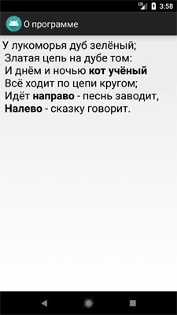
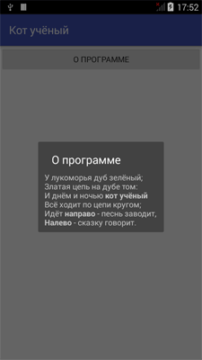
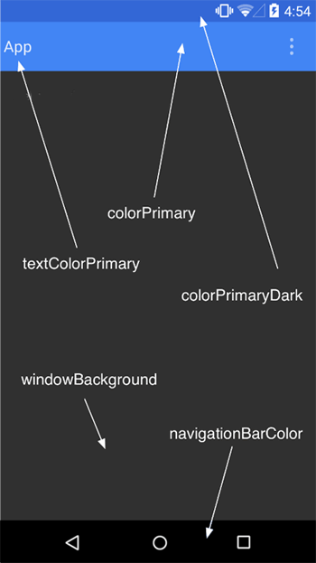
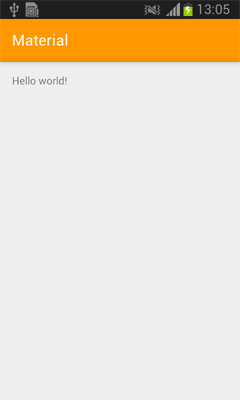
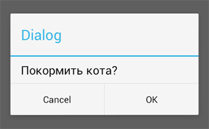
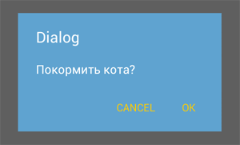
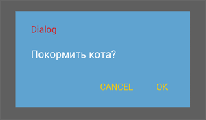
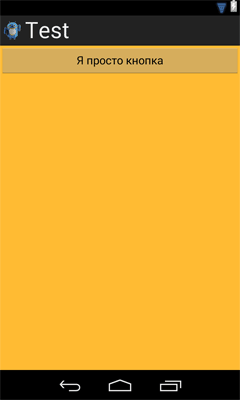
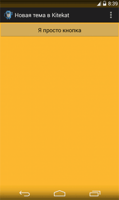

Темы и стили
Общая информация
Стили
Наследование стилей
Тема
Темы для диалоговых окон
Theme Editor
Общая информация
Чтобы наше приложение было стильным, можно воспользоваться специальной темой. Тема - это коллекция стилей, которые обеспечивают профессиональный вид приложению, чтобы оно было похоже на родные приложения Android. Сама система Android уже имеет несколько предустановленных тем, которыми можно воспользоваться в своих целях. Вам достаточно только указать имя темы в манифесте.
Впредыдущем примере мы учились переключаться на другой экран, чтобы увидеть новое окно О программе. Сделаем это окно диалоговым, чтобы оно не занимало весь экран.
Откройте снова файл манифеста AndroidManifest.xml из прошлого урока и измените строчку для активности AboutActivity, указав тему.
<activity android:name=".About"
android:label="@string/about_title"
android:theme="@style/Theme.AppCompat.Dialog";>
</activity>
Запустив программу, вы увидите, что внешний вид окна «О программе» стал уже другим. Сравните.
 
Обратите внимание, что теперь появляется не окно во весь экран, а диалоговое окно в центре экрана. При этом остальная часть экрана затемняется.
Похожие темы: android:theme="@style/Theme.AppCompat.Light.Dialog", android:theme="@style/Theme.AppCompat.Light.Dialog.MinWidth", android:theme="@style/Theme.AppCompat.Dialog.MinWidth".
Тему можно применить не только к отдельной активности, но и ко всем активностям приложения, если прописать в теге application.
Кстати, вы можете разработать свою тему на основе существующих и сохранить ее в файле res/values/styles.xml.
Стили и темы — это такие же ресурсы, как и строки, изображения и т. д. Android обеспечивает некоторые заданные по умолчанию стили и темы, которые вы можете использовать в приложениях. При необходимости вы можете определить свой собственный стиль и тему для создаваемого приложения.
Стили
Стиль — это один или несколько сгруппированных атрибутов форматирования, которые отвечают за внешний вид и поведение элементов или окна. Стиль может задавать такие свойства, как ширину, отступы, цвет текста, размер шрифта, цвет фона и так далее. Сами стили хранятся в XML-файлах, отдельно от файлов разметки.
Подобное разделение напоминает использование каскадных стилей CSS для веб-документов, которые также отвечают за стили HTML-элементов и хранятся в отдельных файлах.
Предположим, у нас есть следующий код разметки для TextView:
<TextView
android:layout_width="match_parent"
android:layout_height="wrap_content"
android:textColor="#00FF00"
android:typeface="monospace"
android:textSize="18sp"
android:text="@string/hello" />
Мы можем вынести все свойства в файл стилей следующим образом:
res/values/styles.xml
<?xml version="1.0" encoding="utf-8"?>
<resources>
<style name="MyTextStyle" parent="@style/Text">
<item name="android:textSize">18sp</item>
<item name="android:textColor">#00FF00</item>
<item name="android:typeface">monospace</item>
</style>
</resources>
Тогда в файле разметки теперь будет так:
<TextView
style="@style/MyTextStyle"
...
android:text="@string/hello" />
Как видите, мы удалили все свойства для текста из файла разметки и разместили их в файле стилей в ресурсе под именем MyTextStyle, который содержит теперь все необходимые свойства.
Создать файл со стилями несложно. Создаем новый XML-файл в папке res/values/ вашего проекта. Имя файла не имеет значения, главное, чтобы расширение было XML, а сам файл находился в указанной папке. В проекте, создаваемом студией, уже есть готовый файл res/values/styles.xml, в который вы можете добавить новые стили. А также вы можете создать свой отдельный файл стилей.
Корневым узлом файла должен быть элемент <resources>. Для каждого элемента, которому требуется стиль, нужно добавить элемент <style> с уникальным именем. Далее создаются элементы <item> для каждого свойства и присваиваются им имена, которые отвечают за выбранное свойство. Значением элемента <item> должно выступать ключевое слово, цвет в шестнадцатеричном значении, ссылка на другой тип ресурсов или другое значение в зависимости от свойства стиля. Ниже представлен образец такого стиля:
<?xml version="1.0" encoding="utf-8"?>
<resources>
<style name="MyTextStyle" parent="@android:style/TextAppearance.Medium">
<item name="android:layout_width">match_parent</item>
<item name="android:layout_height">wrap_content</item>
<item name="android:textColor">#00FF00</item>
<item name="android:typeface">monospace</item>
</style>
</resources>
Во время компиляции все свойства из файла стилей будут извлечены и применены к элементам.
Атрибут parent для элемента style является необязательным и позволяет задавать идентификатор ресурса другого стиля, из которого нужно наследовать свойства. При этом вы можете переопределить свойства в случае необходимости.
Быстрое создание стилей через Android Studio
Если вы решили вынести некоторые свойства компонентов в стили, то необязательно это делать вручную. В студии есть удобный инструмент для быстрого создания ресурсов стилей.
В текстовом режиме щёлкните правой кнопкой мыши на нужном компоненте и в контекстном меню выбирайте пункт Refactor | Extract | Style. Далее укажите имя стиля и выберите требуемые параметры для экспорта. Студия самостоятельно создаст стиль в файле styles.xml и автоматически применит созданный ресурс в layout-файле.
Наследование стилей
Наследование - мощный и полезный механизм, позволяющий не изобретать велосипед, а использовать готовые проверенные наработки. С помощью атрибута parent в элементе style вы можете наследовать нужные свойства из существующих стилей, а также переопределить некоторые свойства или добавить свои дополнительные свойства. Предположим, мы решили наследоваться от существующего системного стиля Android для текстовых сообщений и слегка модифицировать его.
<style name="GreenText" parent="@android:style/TextAppearance">
<item name="android:textColor">#00FF00</item>
</style>
Если вы собираетесь наследоваться от собственных стилей, то использовать атрибут parent не нужно. Просто используйте префикс имени наследуемого стиля перед создаваемым новым стилем, разделяя имена стилей точкой. Например, для создания нового стиля, который наследуется от стиля MyTextStyle, созданного нами ранее, где мы хотим получить красный текст, используйте следующий способ:
<style name="MyTextStyle.Red">
<item name="android:textColor">#FF0000</item>
</style>
Как видите, нам не пришлось использовать атрибут parent в теге style, потому что имя стиля начинается с имени MyTextStyle (созданный нами стиль). Теперь наш стиль наследует все свойства от стиля родителя, при этом мы изменили одно свойство android:textColor, чтобы текст выводился красным цветом. Вы можете ссылаться на новый стиль через конструкцию @style/MyTextStyle.Red.
Вы можете продолжать наследоваться дальше много раз, добавляя новые имена через точку. Допустим, мы хотим расширить свойство MyTextStyle.Red, чтобы текст выводился более крупным шрифтом:
<style name="MyTextStyle.Red.Big">
<item name="android:textSize">30sp</item>
</style>
Итак, мы наследовались от стилей MyTextStyle и MyTextStyle.Red, а затем добавили новое свойство android:textSize.
Не забывайте, что данная техника наследования применима только к собственным стилям. Для наследования системных стилей типа TextAppearance необходимо использовать атрибут parent.
Свойства стиля
Разобравшись с созданием стилей, рассмотрим различные свойства, определяемые в элементе item. Мы уже встречались с такими свойствами, как layout_width и textColor. На самом деле свойств гораздо больше.
Для поиска свойств, которые применимы к заданному View, можно обратиться к документации и просмотреть все поддерживаемые свойства. Так все атрибуты, перечисленные в таблице атрибутов класса TextView могут быть использованы для элементов TextView или EditText. Например, у данных элементов есть свойство android:inputType:
<EditText
android:inputType="number"
... />
Но вместо этого мы можем также создать стиль для элемента EditText, который будет включать в себя данное свойство:
<style name="Numbers">
<item name="android:inputType">number</item>
...
</style>
В файле разметки теперь можно написать так:
<EditText
style="@style/Numbers"
... />
На первый взгляд вам возможно покажется, что подобный подход отнимает слишком много времени. Но в больших проектах повторное использование стиля поможет вам сэкономить и время и силы.
Для просмотра всех существующих стилей вы можете посмотреть исходники Android. Найдите папку, в которую вы устанавливали Android SDK, там можно найти нужные исходники. Например, у меня путь к исходникам стилей Android API 17 выглядит следующим образом: D:\Android\android-sdk-windows\platforms\android-17\data\res\values\styles.xml. Помните, что все объекты View не поддерживает сразу все существующие атрибуты, поэтому используйте только специфичные стили для выбранного элемента. Но если вы по ошибке зададите ошибочный стиль для View, то это не вызовет краха приложения. Элемент View будет использовать только подходящие свойства и игнорировать чужие для него свойства.
Существуют также свойства, которые не поддерживаются ни одним элементом View и применимы только как тема. Подобные стили действуют сразу на всё окно, а не на отдельный элемент. Например, есть тема, скрывающая заголовок приложения, строку состояния или изменяющая фон окна. Подобные стили легко определить по слову window, с которого начинается название стиля: windowNoTitle, windowBackground (о них ниже).
Не забывайте использовать префикс android перед именем в каждом элементе item: <item name="android:inputType">.
Отдельно стоит отметить создание стиля для кнопки. У кнопки есть несколько состояний - обычное, в фокусе, нажатое, нажатое с фокусом. Поэтому для кнопки нужно создать четыре отдельных стиля, чтобы кнопка выглядела профессионально.
Извлечение свойств в стили
Если вы решили в своём проекте использовать стили и вам нужно быстро переместить нужные атрибуты, то Android Studio предлагает быстрый механизм для этой операции. В текстовом режиме ставите курсор на названии компонента, например, ImageView, затем щёлкаете правой кнопкой мыши и выбираете Refactor | Extract | Style.... В диалоговом окне выбираете нужные атрибуты для переноса в стили и выбираете имя стиля.
Динамическое изменение стилей
Ни разу не приходилось пользоваться, но вдруг пригодится.
Context themedContext = new ContextThemeWrapper(baseContext, R.style.MyTheme);
// in LayoutInflater
View view = LayoutInflater.from(themedContext)
.inflate(R.layout.mylayout, null);
// in constructor
View view = new View(themedContext);
Тема
Тема - это более ёмкое понятие. По существу, тема - стиль, который относится ко всему экрану активности или приложению, а не к отдельному компоненту приложения. Таким образом, тема имеет свои атрибуты и свою область применения.
Темы похожи на определения стилей. Точно так же, как стили, темы объявляются в XML-файле элементами <style>, и ссылаются на них тем же самым способом. Различие состоит в том, что тема добавляется ко всему приложению или к отдельной активности через элементы <application> и <activity> в файле манифеста приложения, т. к. темы не могут быть применены к отдельным компонентам.
Чтобы установить тему, откройте файл AndroidManifest.xml и отредактируйте тег <application>, чтобы он включал в себя атрибут android:theme с указанием имени стиля:
<application android:theme="@style/CustomTheme">
Если вы хотите, чтобы тема относилась не ко всему приложению, а к отдельной активности, то атрибут android:theme нужно добавить в тег <activity>.
Во многих случаях нет необходимости придумывать свои стили и темы, так как Android содержит множество собственных встроенных тем. Например, вы можете использовать тему Dialog, чтобы окно приложения выглядело как диалоговое окно (Смотри выше).
Если вам нравится тема, но несколько свойств всё-таки хотите подправить под себя, то просто добавьте тему как родительскую тему к своей теме. Например, мы хотим модифицировать стандартную тему Theme.Light, чтобы использовать свои цвета.
<color name="custom_theme_color">#b0b0ff</color>
<style name="CustomTheme" parent="android:Theme.Light">
<item name="android:windowBackground">@color/custom_theme_color</item>
<item name="android:colorBackground">@color/custom_theme_color</item>
</style>
Теперь мы можем использовать свой стиль вместо Theme.Light в манифесте:
<activity android:theme="@style/CustomTheme">
Небольшой список свойств, которые используются для настройки собственных тем.
- android:windowNoTitle: используйте значение true, чтобы скрыть заголовок
- android:windowFullscreen: используйте значение true, чтобы скрыть строку состояния и освободить место для приложения
- android:windowBackground: ресурс цвета или drawable для фона
- android:windowContentOverlay: Drawable, который рисуется поверх содержимого окна. По умолчанию, это тень от строки состояния. Можно использовать null (@null в XML-файле) для удаления ресурса.
В Android 5.0 появились новые темы, которые получили название Material Design.
- @android:style/Theme.Material (тёмная версия)
- @android:style/Theme.Material.Light (светлая версия)
- @android:style/Theme.Material.Light.DarkActionBar (светлая версия с тёмным заголовком)
В Android 9.0 темы Material Design продолжили развитие, они будут активно внедряться в ближайшее время.
- Theme.MaterialComponents
- Theme.MaterialComponents.NoActionBar
- Theme.MaterialComponents.Light
- Theme.MaterialComponents.Light.NoActionBar
- Theme.MaterialComponents.Light.DarkActionBar
Для Material Design были разработаны новые атрибуты тем.
- android:colorPrimary: основной цвет для интерфейса программы - панель, кнопки и т.д.
- android:colorPrimaryDark: цвет для системных элементов - строка состояния
- android:colorAccent: Цвет по умолчанию для компонентов, которые находятся в фокусе или активны
- android:colorControlNormal: Цвет для неактивных компонентов
- android:colorControlActivated: Цвет для активных компонентов
- android:colorControlHighlight: Цвет для нажатых элементов интерфейса
- colorSwitchThumbNormal: и т.д. изучаем документацию
Позже были добавлены другие атрибуты: colorPrimaryVariant, colorOnPrimary, colorSecondary, colorSecondaryVariant, colorOnSecondary, colorError, colorOnError, colorSurface, colorOnSurface, colorBackground, colorOnBackground.

Настройка цветов происходит по определённым правилам. На сайте http://www.google.com/design/spec/style/color.html# есть таблица цветов. Обратите внимание на числа слева. Основным цветом (colorPrimary) считается цвет под номером 500, он идёт первым в таблицах. Этот цвет должен использоваться в качестве заголовка (Toolbar).
Допустим, мы делаем специальное приложение для рыжего кота. Создадим новый файл res/values/colors.xml. На указанном сайте находим таблицу цветов оранжевого цвета Orange и будем использовать предлагаемое значение.
Зададим основной цвет.
<color name="primaryColor">#FF9800</color>
Для строки состояние, которая находится выше заголовка приложения, нужно использовать цвет со значением 700 (colorPrimaryDark). Это более тёмный цвет и позволяет различать заголовок приложения и строку состояния. Возвращаемся к оранжевой таблице цветов, запоминаем значение цвета и прописываем его в ресурсах.
<color name="primaryColorDark">#F57C00</color>
Пропишем в теме приложения новые элементы.
<resources>
<!-- Base application theme. -->
<style name="AppTheme" parent="Theme.AppCompat.Light.DarkActionBar">
<!-- Customize your theme here. -->
<item name="colorPrimary">@color/primaryColor</item>
<item name="colorPrimaryDark">@color/primaryColorDark</item>
</style>
</resources>
На старых устройствах цвет строки состояния не изменяется. Цвет заголовка поменять можно.

В файле res/values-v21/styles.xml для новых устройств нужно повторить указанные действия с небольшой поправкой. В API 21 уже есть предопределённые константы для эти цветов, поэтому используем в именах android:colorPrimary и android:colorPrimaryDark.
В одной из недавних версий библиотеки совместимости была реализована поддержка нового дизайна для всех устройст и такое разделение сейчас не является обязательным.
<?xml version="1.0" encoding="utf-8"?>
<resources>
<style name="AppTheme" parent="android:Theme.Material.Light">
<item name="android:colorPrimary">@color/primaryColor</item>
<item name="android:colorPrimaryDark">@color/primaryColorDark</item>
</style>
</resources>
С главным цветом есть одна тонкость. Старые устройства используют ActionBar и его цвет подчиняется правилам Material Design из коробки. На новых устройствах для активности используется тема без панели действий Theme.AppCompat.NoActionBar и вручную добавляется компонент Toolbar. Чтобы он использовал основной цвет, используйте правильный стиль для фонового цвета.
<android.support.v7.widget.Toolbar
android:layout_width="match_parent"
android:layout_height="wrap_content"
android:background="?attr/colorPrimary" />
Третий важный цвет для использования в приложениях - акцентированный. Данный цвет может использоваться для кнопки Floating Action Button и для различных компонентов. Он должен быть достаточно контрастным по сравнению с основным цветом. Для примера выберем зелёный цвет по цвету глаз рыжих котов. Находим в таблице зелёный цвет и выбираем нужное значение из A400
<color name="accentColor">#00E676</color>
Прописываем цвет в обоих темах:
<item name="colorAccent">@color/accentColor</item>
<item name="android:colorAccent">@color/accentColor</item>
Сейчас акцентированный цвет мы нигде не увидим. Вернёмся к нему позже.
Акцентированные цвета поддерживаются многими компонентами из коробки. Для некоторых следует использовать аналоги из библиотеки AppCompat:
- Флажки и переключатели
- SwitchCompat вместо Switch
- Курсор у EditText
- Текст у TextInputLayout
- Текущий индикатор у TabLayout
- Выбранный элемент у NavigationView
- Фон у FloatingActionButton
Пользуйтесь сервисом Material Design Color Palette Generator для создания палитры в стиле Material: выбираем основной цвет, цвет «плавающей» кнопки и сайт генерирует необходимую палитру.
В Android 5.0 появился новый атрибут темы colorEdgeEffect. Вам необходимо переопределить тему, а затем применить к компоненту.
res/values/themes.xml
<style name="RedThemeOverlay" parent="android:ThemeOverlay.Material">
<item name="android:colorEdgeEffect">#FF0000</item>
</style>
res/layout/fragment_list.xml
<ListView
...
android:theme="RedThemeOverlay" />
Темы для диалоговых окон
По умолчанию, диалоговые окна на Lollipop-устройствах будут выглядеть в стиле Material Design. Но если вы хотите немного изменить внешний вид, то можно применить стили и темы к ним. Создайте отдельный стиль:
<style name="AlertDialogCustom" parent="Theme.AppCompat.Light.Dialog">
<item name="colorAccent">@color/primary</item>
</style>
Добавьте созданный стиль к теме.
<style name="AppTheme" parent="Theme.AppCompat.Light.DarkActionBar">
<item name="colorPrimary">@color/primary</item>
<item name="colorPrimaryDark">@color/primary_dark</item>
<item name="colorAccent">@color/accent</item>
<item name="android:alertDialogTheme">@style/AlertDialogCustom</item>
</style>
Также можно создать отдельный стиль для негативной кнопки, чтобы она была красной и отличалась от позитивной кнопки.
<style name="AlertDialogCustom.Destructive">
<item name="android:buttonBarPositiveButtonStyle">@style/DestructiveButton</item>
</style>
<style name="DestructiveButton"
parent="android:Widget.DeviceDefault.Button.Borderless">
<item name="android:textColor">@color/red</item>
</style>
Затем в коде используете созданный стиль.
AlertDialog alertDialog = new AlertDialog.Builder(
getActivity(),
R.style.AlertDialogCustom_Destructive)
.setPositiveButton(R.string.button_delete, new DialogInterface.OnClickListener() {
@Override
public void onClick(DialogInterface dialogInterface, int i) {
// Delete Action
}
})
.setNegativeButton(R.string.button_cancel, new DialogInterface.OnClickListener() {
@Override
public void onClick(DialogInterface dialogInterface, int i) {
// Cancel Action
}
})
.setTitle(R.string.title_delete_item)
.create();
Сам пока не проверял.
Темы для диалоговых окон для старых устройств
В библиотеке совместимости версии 22.1.0 появилась поддержка Material Design для диалоговых окон.
Для начала вызовем диалоговое окно стандартным способом:
import android.app.AlertDialog;
public void onClick(View view) {
AlertDialog.Builder builder = new AlertDialog.Builder(this);
builder.setTitle("Dialog");
builder.setMessage("Покормить кота?");
builder.setPositiveButton("OK", null);
builder.setNegativeButton("Cancel", null);
builder.show();
}

Добавим стили в файл styles.xml:
<style name="AppCompatAlertDialogStyle" parent="Theme.AppCompat.Light.Dialog.Alert">
<item name="colorAccent">#FFCC00</item>
<item name="android:textColorPrimary">#FFFFFF</item>
<item name="android:background">#5fa3d0</item>
</style>
Для вывода диалогового окна будем использовать класс из библиотеки совместимости, у которого есть дополнительный параметр для указания темы.
import android.support.v7.app.AlertDialog;
public void onClick(View view) {
AlertDialog.Builder builder = new AlertDialog.Builder(this, R.style.AppCompatAlertDialogStyle);
builder.setTitle("Dialog");
builder.setMessage("Покормить кота?");
builder.setPositiveButton("OK", null);
builder.setNegativeButton("Cancel", null);
builder.show();
}

Если хотите также поменять цвет для заголовка диалогового окно, то добавьте в предыдущую тему AppCompatAlertDialogStyle новый элемент windowTitleStyle и создайте стиль для него.
<item name="android:windowTitleStyle">@style/TitleDialogTextStyle</item>
<style name="TitleDialogTextStyle">
<item name="android:textColor">#d71616</item>
</style>

Стили для компонентов
У компонентов также появились новые стили, связанные с Material Design. Например, TextAppearance.Material.Title:
<TextView
android:layout_width="match_parent"
android:layout_height="wrap_content"
android:textAppearance="@android:style/TextAppearance.Material.Title"
android:id="@+id/textView"
android:text="Текст в стиле Title" />
Темы для компонентов
Обычно темы применялись к активности или приложению. Сейчас самый распространённый вариант Theme.AppCompat.
В Lollipop и AppCompat с версии 22.1 стало возможным присваивать тему отдельному компоненту. В этой связи появился отдельный тип темы ThemeOverlay, который позволяет менять только необходимые настройки. Например, ThemeOverlay.AppCompat.Light меняет фоновый цвет, цвет текста и выделенный текст, как если это была бы светлая тема. Соответственно, ThemeOverlay.AppCompat.Dark работает как тёмная тема.
Это может пригодится, чтобы цвет текста не совпадал с цветом фона и был читаемым. Например, это часто используется у Toolbar:
<android.support.v7.widget.Toolbar
android:layout_width="match_parent"
android:layout_height="wrap_content"
android:background="?attr/colorPrimary"
android:theme="@style/ThemeOverlay.AppCompat.Dark.ActionBar" />
Также используется при создании собственных тем
<style name="ThemeOverlay.AccentSecondary"
parent="ThemeOverlay.AppCompat">
<item name="colorAccent">@color/accent_secondary</item>
</style>
Выбор темы в зависимости от версии платформы
Каждая новая версия Android обзаводится несколькими новыми темами. И, возможно, вам захочется использовать новые темы в своих приложениях, чтобы пользователи новых аппаратов увидели современный интерфейс, при этом владельцы старых аппаратов будут видеть приложение в другом виде.
Предположим у вас есть собственная тема, использующая стандартную светлую тему, в файле res/values/styles.xml:
<style name="LightThemeSelector" parent="android:Theme.Light">
...
</style>
Чтобы задействовать также новую голографическую тему, доступную в Android 3.0 (API Level 11) и выше, создайте альтернативный файл стилей в папке res/values-v11, где будет указана новая тема:
<style name="LightThemeSelector" parent="android:Theme.Holo.Light">
...
</style>
Для последней версии Android 5.0 вам понадобится папка res/values-21 для темы, использующую Material Design.
Теперь программа автоматически будет переключаться между стилями, самостоятельно определяя версию Android.
Список стандартных атрибутов, используемых в темах, можно найти на странице .
Использование стилей и тем платформы
Вы можете создавать собственные стили, а можете подключать готовые системные стили или отдельные атрибуты стилей, используемых в Android. Для указания стиля, предопределённого в Android, используется следующий синтаксис:
style="@android:style/TextAppearance
Если вам нужно выбрать только отдельную часть стиля, то используйте знак вопроса:
<EditText
id="@+id/edit"
android:textColor:="?android:textColorSecondary" />
Знак ? применяется для поиска значения стиля в текущей теме, а подстрока ?android означает поиск значения стиля в системной теме Android.
В студии можно выбрать системную тему сразу из среды разработки. Откройте файл разметки в режиме Design. Чуть выше формы имеется выпадающая кнопка AppTheme. Нажмите на неё и поиграйтесь со списком, чтобы просмотреть другие варианты. Вы сможете увидеть, как будет выглядеть ваше приложение в разных темах. Учтите, что эта настройка не вносит изменения в ваш файл, а предназначена только для просмотра темы, чтобы вы представляли, как будет выглядеть программа у разных пользователей.
В последних версиях проектов студии, которые используют тему AppCompat для создания полноэкранной активности используйте стиль:
<style name="Theme.AppCompat.Light.NoActionBar.FullScreen" parent="Theme.AppCompat.Light">
<item name="windowNoTitle">true</item>
<item name="windowActionBar">false</item>
<item name="android:windowFullscreen">true</item>
<item name="android:windowContentOverlay">@null</item>
</style>
И примените его к нужной активности.
<activity
android:name=".MainActivity"
android:theme="@style/Theme.AppCompat.Light.NoActionBar.FullScreen">
Новые темы в Android 4.4
В Android 4.4 появилась возможность сделать панель навигации и строку состояния полупрозрачными. Откройте файл styles.xml и добавьте строчки:
<!-- Application theme. -->
<style name="AppTheme" parent="AppBaseTheme">
<!-- All customizations that are NOT specific to a particular API-level can go here. -->
<item name="android:windowTranslucentStatus">true</item>
<item name="android:windowTranslucentNavigation">true</item>
<item name="android:fitsSystemWindows">true</item>
<!-- <item name="android:actionBarStyle">@style/ActionBar.Solid.GreenStyle</item> -->
</style>
<style name="ActionBar.Solid.GreenStyle" parent="@android:style/Widget.Holo.Light.ActionBar.Solid">
<item name="android:background">@android:color/holo_green_dark</item>
</style>
Последний пункт у меня закомментирован. Он позволяет настроить тему для ActionBar. Можете поиграться с ним. Для сравнения ниже представлены скриншоты стандартного окна активности с чёрными полосками снизу и сверху и стилизованной активности. Для наглядности я выбрал оранжевый цвет для фона активности.
 
Если говорить об эволюции тем и стилей, то в Android 2.x темы были в зачаточном состоянии. В Android 3/4 дизайнеры проделали огромную работу, чтобы система стала красивой и предложили тему Holo. В новой версии Android 5.0 работа над стилями была продолжена и была представлена новая концепция стиля под названием Material Design с подробной документацией по её использованию.
В статье Android App Launching Made Gorgeous рассматривается интересный случай, когда неправильное использование тем приводит к некрасивому эффекту - сначала загружается пустой экран, а затем уже экран вашей активности.
Темы для View
В статье говорилось, что отдельные компоненты должны использовать стили, а активности - темы. В Android 5.0 Lollipop, а также старые устройства с API 11 через библиотеку совместимости AppCompat могут также использовать темы:
<Toolbar
android:theme="@style/ThemeOverlay.AppCompat.Dark.ActionBar"
app:popupTheme="@style/ThemeOverlay.AppCompat.Light" />
Небольшой список на память.
- ThemeOverlay.AppCompat
- ThemeOverlay.AppCompat.Light
- ThemeOverlay.AppCompat.Dark
- ThemeOverlay.AppCompat.ActionBar
- ThemeOverlay.AppCompat.Dark.ActionBar
Например, ваши компоненты в разметке используют светлую тему, а родительский элемент должен использовать тёмную тему. Тогда применим к нему готовую тему.
<FrameLayout
android:background="@color/dark_background"
android:theme="@style/ThemeOverlay.AppCompat.Dark">
<TextView />
</FrameLayout>
Если вам нужно изменить конкретный атрибут, например, colorAccent, то добавьте новую тему:
<style name="CustomAccentOverlay" parent="ThemeOverlay.AppCompat">
<item name="colorAccent">@color/custom_accent</item>
</style>
Примените тему к вашему компоненту через android:theme="CustomAccentOverlay". Так вы можете переопределить и другие атрибуты.
Общие советы
Избегайте конкретных значений для цвета.
<View …
android:background="@color/white"/>
Лучше используйте атрибуты, что позволит вам корректно переключаться к тёмной теме.
<View …
android:background="?attr/colorSurface"/>
В некоторых ситуациях использование готовых значений цвета оправдано.
При работе с элементами темы программным способом не используйте Context от Application, только от Activity.